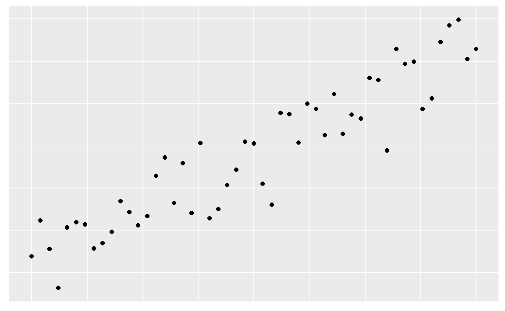
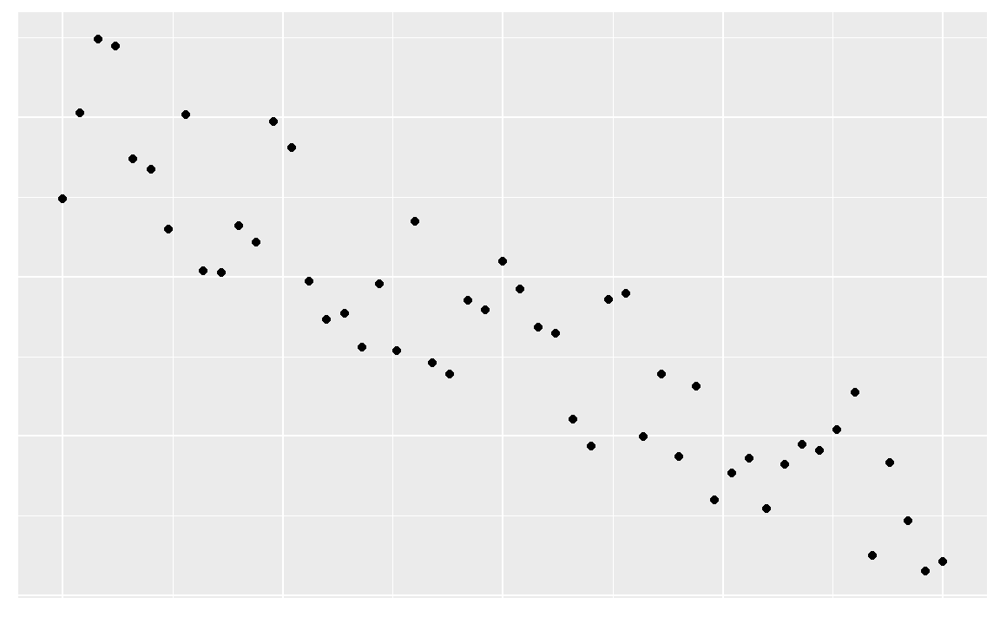
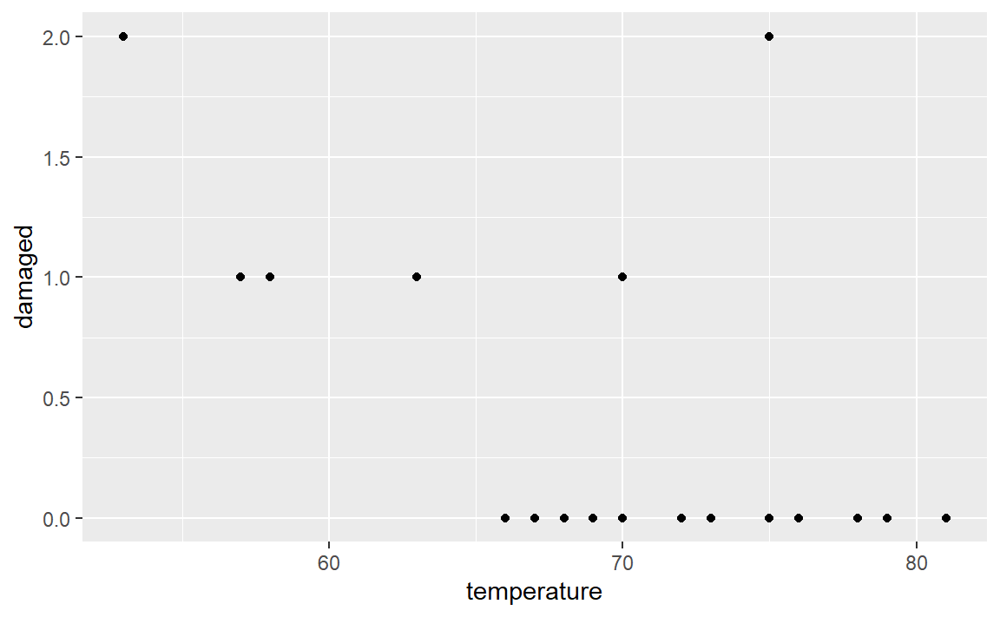

Chapitre 19 La corrélation linéaire
La corrélation est l’étude de l’intensité du lien entre deux variables. Elle permet de quantifier la relation entre deux variables quantitatives.
Bien qu’à priori le lien de dépendance ne soit pas toujours évident entre ces deux variables, il est pratique, à des fins d’analyse, de définir la variable indépendante \(X\) et la variable dépendante \(Y\).
19.1 Mise en place
Nous utiliserons les librairies suivantes pour ce chapitre.
library(tidyverse)
library(datasauRus)
library(knitr)Dans ce chapitre, nous utiliserons la base de données starwars qui est chargée par l’extension dplyr du tidyverse. Les informations présentes dans cette base de données sont:
| variable | description |
|---|---|
| name | Name of the character |
| height | Height (cm) |
| mass | Weight (kg) |
| hair_color,skin_color,eye_color | Hair, skin, and eye colors |
| birth_year | Year born (BBY = Before Battle of Yavin) |
| gender | male, female, hermaphrodite, or none. |
| homeworld | Name of homeworld |
| species | Name of species |
| films | List of films the character appeared in |
| vehicles | List of vehicles the character has piloted |
| starships | List of starships the character has piloted |
Nous pouvons avoir un meilleur apercu des différentes variables de la base de données en utilisant la commande glimpse.
glimpse(starwars)
#> Rows: 87
#> Columns: 14
#> $ name <chr> "Luke Skywalker", "C-3PO", "R2-D2", "Darth Vader", "Leia Or~
#> $ height <int> 172, 167, 96, 202, 150, 178, 165, 97, 183, 182, 188, 180, 2~
#> $ mass <dbl> 77.0, 75.0, 32.0, 136.0, 49.0, 120.0, 75.0, 32.0, 84.0, 77.~
#> $ hair_color <chr> "blond", NA, NA, "none", "brown", "brown, grey", "brown", N~
#> $ skin_color <chr> "fair", "gold", "white, blue", "white", "light", "light", "~
#> $ eye_color <chr> "blue", "yellow", "red", "yellow", "brown", "blue", "blue",~
#> $ birth_year <dbl> 19.0, 112.0, 33.0, 41.9, 19.0, 52.0, 47.0, NA, 24.0, 57.0, ~
#> $ sex <chr> "male", "none", "none", "male", "female", "male", "female",~
#> $ gender <chr> "masculine", "masculine", "masculine", "masculine", "femini~
#> $ homeworld <chr> "Tatooine", "Tatooine", "Naboo", "Tatooine", "Alderaan", "T~
#> $ species <chr> "Human", "Droid", "Droid", "Human", "Human", "Human", "Huma~
#> $ films <list> <"The Empire Strikes Back", "Revenge of the Sith", "Return~
#> $ vehicles <list> <"Snowspeeder", "Imperial Speeder Bike">, <>, <>, <>, "Imp~
#> $ starships <list> <"X-wing", "Imperial shuttle">, <>, <>, "TIE Advanced x1",~19.2 Le nuage de points
Dans le cours de méthodes quantitatives, nous nous intéressons à la corrélation linéaire. Un nuage de points permet de visualiser les données.
Pour construire ce graphique:
- Le titre doit être indiqué : “Lien entre variable 1 et variable 2.”
- La variable indépendante est placée sur l’axe des \(x\) et la variable dépendante est placée sur l’axe des \(y\).
- Les titres des axes doivent être présents.
- Un point doit être placé à la coordonnée \((x_i,y_i)\) pour chacun des couples de données.
- Les axes \(x\) et \(y\) peuvent être coupés pour améliorer la présentation.
Nous allons débuter par représenter les deux variables étudiées:. Puisque la base de données contient 87, nous n’afficherons que les premières données.
| height | mass |
|---|---|
| 172 | 77 |
| 167 | 75 |
| 96 | 32 |
| 202 | 136 |
| 150 | 49 |
| 178 | 120 |
| … | … |
Nous allons nous intéresser aux variables height et mass de la base de données starwars. Puisque la masse (mass) dépend de la taille (height), la variable mass est la variable dépendante et la variable height est la variable indépendante.
Nous affichons ces données dans un plan cartésien et chaque ligne du tableau précédent correspond aux coordonnées cartésiennes de nos points. Par exemple, puisque le premier personnage à une taille de 172 et un poids de 77, nous allons afficher le point (172,77). Si nous le faisons pour toutes les données, nous obtenons un nuage de points.
Nous avons donc:
ggplot(data = starwars, aes(x = height, y = mass))+
geom_point()+
labs(
x = "Taille (cm)",
y = "Masse (kg)",
title = "Lien entre la taille et la masse"
)
#> Warning: Removed 28 rows containing missing values (geom_point).Nous remarquons une donnée qui semble aberrante dans le graphique précédent. Le personnage de Star Wars semble avoir une masse très importante par rapport à sa taille. Puisque sa masse dépasse 1000kg, nous allons filtrer les données pour trouver le nom du personnage en question.
starwars %>%
filter(mass > 1000)
#> # A tibble: 1 x 14
#> name height mass hair_color skin_color eye_color birth_year sex gender
#> <chr> <int> <dbl> <chr> <chr> <chr> <dbl> <chr> <chr>
#> 1 Jabba ~ 175 1358 <NA> green-tan,~ orange 600 herma~ mascu~
#> # ... with 5 more variables: homeworld <chr>, species <chr>, films <list>,
#> # vehicles <list>, starships <list>Le personnage est bien sûr Jabba Desilijic Tiure.
Jabba
Il est possible de quantifier la force de la corrélation linéaire entre deux variables à l’aide d’une mesure. Cette mesure est appelée le coefficient de corrélation et est noté \(r\).
La formule pour calculer \(r\) est la suivante:
\[ r = \dfrac{\sum xy - n\bar x \bar y}{(n-1)s_x s_y} \]
Nous pouvons utiliser la commande cor dans R pour trouver le coefficient de corrélation. Par exemple, si nous voulons trouver le coefficient de corrélation entre les variables height et mass:
cor(starwars$height,starwars$mass)
#> [1] NANous obtenons comme réponse NA. Ceci signifie que des données sont manquantes dans nos observations. Pour calculer un coefficient de corrélation en omettant les données manquantes, nous pouvons utiliser l’option use = "complete.obs". Nous obtenons donc:
cor(starwars$height, starwars$mass, use = "complete.obs")
#> [1] 0.134Le coefficient de corrélation est donc de 0.134.
Nous pouvons calculer le coefficient de corrélation lorsque nous enlevons l’observation de Jabba Desilijic Tiure. Nous obtenons:
no_jabba <- starwars %>%
filter(mass < 1000)
cor(no_jabba$height, no_jabba$mass)
#> [1] 0.761Le coefficient de corrélation est maintenant de 0.761.
La valeur de \(r\) permet de quantifier la force de la corrélation entre \(X\) et \(Y\) et permet aussi de déterminer si cette corrélation est positive ou négative.
19.3 Fake data
19.3.1 Corrélation positive

19.3.2 Corrélation négative

19.3.3 Aucune corrélation
19.3.4 Une autre façon de simuler
N <- 50 # Nombre de points
x0 <- 0
xf <- 1
delta <- (xf-x0)/N
x <- seq(x0, xf, delta)
y_pos_high <- x+b+rnorm(N+1, 0, (0.25)^2)
y_pos_low <- x+b+rnorm(N+1, 0, (0.5)^2)
y_neg_high <- -x+1+rnorm(N+1, 0, (0.25)^2)
y_neg_low <- -x+1+rnorm(N+1, 0, (0.5)^2)
cor_lin <- rbind(
tibble(
type = "Corrélation positive forte",
x,
y = y_pos_high),
tibble(
type = "Corrélation positive faible",
x,
y = y_pos_low),
tibble(
type = "Corrélation négative forte",
x,
y = y_neg_high),
tibble(
type = "Corrélation négative faible",
x,
y = y_neg_low)
)
ggplot(cor_lin, aes(x, y))+
geom_point()+
facet_wrap(~type)+
theme(axis.title.x=element_blank(),
axis.text.x=element_blank(),
axis.ticks.x=element_blank(),
axis.title.y=element_blank(),
axis.text.y=element_blank(),
axis.ticks.y=element_blank())+
xlim(-0,1)+
ylim(-0.5,1.5)
19.3.5 Autre essai moderndive
#> Warning: `as_data_frame()` was deprecated in tibble 2.0.0.
#> Please use `as_tibble()` instead.
#> The signature and semantics have changed, see `?as_tibble`.
#> Warning: The `x` argument of `as_tibble.matrix()` must have unique column names if `.name_repair` is omitted as of tibble 2.0.0.
#> Using compatibility `.name_repair`.Figure 19.1: Different correlation coefficients
19.4 Le quartet d’Anscombe
Le quartet d’Anscombe est constitué de quatre ensembles de données qui ont les mêmes propriétés statistiques simples mais qui sont en réalité très différents, ce qui se voit facilement lorsqu’on les représente sous forme de graphiques. Ils ont été construits en 1973 par le statisticien Francis Anscombe dans le but de démontrer l’importance de tracer des graphiques avant d’analyser des données, car cela permet notamment d’estimer l’incidence des données aberrantes sur les différentes indices statistiques que l’on pourrait calculer.
Le quartet d’Anscombe est disponible dans R sous le nom anscombe.
kable(anscombe)| x1 | x2 | x3 | x4 | y1 | y2 | y3 | y4 |
|---|---|---|---|---|---|---|---|
| 10 | 10 | 10 | 8 | 8.04 | 9.14 | 7.46 | 6.58 |
| 8 | 8 | 8 | 8 | 6.95 | 8.14 | 6.77 | 5.76 |
| 13 | 13 | 13 | 8 | 7.58 | 8.74 | 12.74 | 7.71 |
| 9 | 9 | 9 | 8 | 8.81 | 8.77 | 7.11 | 8.84 |
| 11 | 11 | 11 | 8 | 8.33 | 9.26 | 7.81 | 8.47 |
| 14 | 14 | 14 | 8 | 9.96 | 8.10 | 8.84 | 7.04 |
| 6 | 6 | 6 | 8 | 7.24 | 6.13 | 6.08 | 5.25 |
| 4 | 4 | 4 | 19 | 4.26 | 3.10 | 5.39 | 12.50 |
| 12 | 12 | 12 | 8 | 10.84 | 9.13 | 8.15 | 5.56 |
| 7 | 7 | 7 | 8 | 4.82 | 7.26 | 6.42 | 7.91 |
| 5 | 5 | 5 | 8 | 5.68 | 4.74 | 5.73 | 6.89 |
Les observations \(x_i\) sont reliées aux observations \(y_i\). Pour visualiser ces quatre ensembles de données, nous avons produit une nouvelle base de données anscombe_tidy sous la forme de tidy data.
Avant d’afficher les ensembles de données, nous allons calculer quelques mesures sur chacun de ces ensembles, à savoir, la moyenne des \(x\), la moyenne des \(y\), la variance des \(x\), la variance des \(y\) et le coefficient de corrélation.
anscombe_tidy %>%
group_by(ensemble) %>%
summarise("moyenne des $x$"=mean(x),
"variance des $x$"=var(x),
"moyenne des $y$"=mean(y),
"variance des $y$"=var(y),
"coeff. de corrélation"=cor(x,y)) %>%
kable| ensemble | moyenne des \(x\) | variance des \(x\) | moyenne des \(y\) | variance des \(y\) | coeff. de corrélation |
|---|---|---|---|---|---|
| I | 9 | 11 | 7.5 | 4.13 | 0.816 |
| II | 9 | 11 | 7.5 | 4.13 | 0.816 |
| III | 9 | 11 | 7.5 | 4.12 | 0.816 |
| IV | 9 | 11 | 7.5 | 4.12 | 0.817 |
Comme nous pouvons le remarquer, les quatre ensembles de données possèdent les mêmes mesures. Par contre, lorsque nous affichons ensuite les quatre ensembles de données, nous remarquons que ces ensembles sont très différents.
ggplot(anscombe_tidy, aes(x, y)) +
geom_point() +
facet_wrap(~ ensemble) +
geom_smooth(method = "lm", se = FALSE)
#> `geom_smooth()` using formula 'y ~ x'19.5 DatasauRus
datasaurus_dozen %>%
group_by(dataset) %>%
summarise("moyenne des $x$"=mean(x),
"variance des $x$"=var(x),
"moyenne des $y$"=mean(y),
"variance des $y$"=var(y),
"coeff. de corrélation"=cor(x,y)) %>%
kable| dataset | moyenne des \(x\) | variance des \(x\) | moyenne des \(y\) | variance des \(y\) | coeff. de corrélation |
|---|---|---|---|---|---|
| away | 54.3 | 281 | 47.8 | 726 | -0.064 |
| bullseye | 54.3 | 281 | 47.8 | 726 | -0.069 |
| circle | 54.3 | 281 | 47.8 | 725 | -0.068 |
| dino | 54.3 | 281 | 47.8 | 726 | -0.064 |
| dots | 54.3 | 281 | 47.8 | 725 | -0.060 |
| h_lines | 54.3 | 281 | 47.8 | 726 | -0.062 |
| high_lines | 54.3 | 281 | 47.8 | 726 | -0.069 |
| slant_down | 54.3 | 281 | 47.8 | 726 | -0.069 |
| slant_up | 54.3 | 281 | 47.8 | 726 | -0.069 |
| star | 54.3 | 281 | 47.8 | 725 | -0.063 |
| v_lines | 54.3 | 281 | 47.8 | 726 | -0.069 |
| wide_lines | 54.3 | 281 | 47.8 | 726 | -0.067 |
| x_shape | 54.3 | 281 | 47.8 | 725 | -0.066 |
ggplot(datasaurus_dozen, aes(x=x, y=y, colour=dataset))+
geom_point()+
theme_void()+
theme(legend.position = "none")+
facet_wrap(~dataset, ncol=3)19.6 Challenger
kable(orings)| fligth | temperature | damaged |
|---|---|---|
| 1 | 53 | 2 |
| 2 | 57 | 1 |
| 3 | 58 | 1 |
| 4 | 63 | 1 |
| 5 | 66 | 0 |
| 6 | 67 | 0 |
| 7 | 67 | 0 |
| 8 | 67 | 0 |
| 9 | 68 | 0 |
| 10 | 69 | 0 |
| 11 | 70 | 1 |
| 12 | 70 | 1 |
| 13 | 70 | 0 |
| 14 | 70 | 0 |
| 15 | 72 | 0 |
| 16 | 73 | 0 |
| 17 | 75 | 2 |
| 18 | 75 | 0 |
| 19 | 76 | 0 |
| 20 | 76 | 0 |
| 21 | 78 | 0 |
| 22 | 79 | 0 |
| 23 | 81 | 0 |
19.6.1 Toutes les données
ggplot(data = orings, aes(x = temperature, y = damaged))+
geom_point()
19.6.2 Sans incident
orings %>%
filter(damaged != 0) %>%
ggplot(aes(x = temperature, y = damaged))+
geom_point()19.6.3 Probabilités en enlevant les incidents
fitting <- orings %>%
filter(damaged > 0) %>%
mutate(proba = if_else(damaged > 0, damaged/6, 0.01)) %>%
mutate(log = log(proba/(1-proba)))
model <- lm(log ~temperature, data = fitting)
b <- model$coefficients[[1]]
a <- model$coefficients[[2]]
fun <- function(x){6*exp(a*x+b)/(1+exp(a*x+b))}
ggplot(data = fitting, aes(x = temperature, y = damaged))+
geom_point()+
stat_function(fun = fun)+
xlim(30, 90)+
ylim(0,6)
19.6.4 Probabilités en gardant les incidents
fitting <- orings %>%
mutate(proba = if_else(damaged > 0, damaged/6, 0.01)) %>%
mutate(log = log(proba/(1-proba)))
model <- lm(log ~temperature, data = fitting)
b <- model$coefficients[[1]]
a <- model$coefficients[[2]]
fun <- function(x){6*exp(a*x+b)/(1+exp(a*x+b))}
ggplot(data = orings, aes(x = temperature, y = damaged))+
geom_point()+
stat_function(fun = fun)+
xlim(30, 90)+
ylim(0,6)19.6.5 GLM
model <- glm(cbind(damaged, 6-damaged)~temperature, data = orings, family = binomial)
b <- model$coefficients[[1]]
a <- model$coefficients[[2]]
fun <- function(x){6*exp(a*x+b)/(1+exp(a*x+b))}
ggplot(data = orings, aes(x = temperature, y = damaged))+
geom_point()+
stat_function(fun = fun)+
xlim(30, 90)+
ylim(0,6)